beoopsie is a handmade 3D press-on nail brand built as a streetwear label, selling limited drops in Romania. As Marketing Creative I cover three parts of its marketing, and this page walks through each of them in turn: social media posting, the product and social media photoshoots behind every launch, and the web development of the online store.
Press-on nails are still a niche that is gaining ground, especially in Romania, and very few brands were making them look clean and premium, so I took the photography on myself. Every launch includes its own photoshoots, from product close-ups for the store to editorial campaign shoots for social media, which I then edit into the product images, mockups and visuals used across all of our channels.
I built beoopsie's Shopify store from scratch and keep maintaining it, and it now brings in around 2,000 visits a month. My latest addition is "Press On Right", a tutorials section with four guides on nail prep, application, removal and reuse, for which I also created the visuals so that the store teaches customers how to get the best out of every set.
Social Media Posting
I run beoopsie's social media with the voice of a streetwear label rather than a beauty brand, planning and posting the content around each limited drop, always written in English. On Instagram this organic content has reached up to 10,000 views per month, and I support each launch with Meta ad campaigns and newsletters that carry the same message.